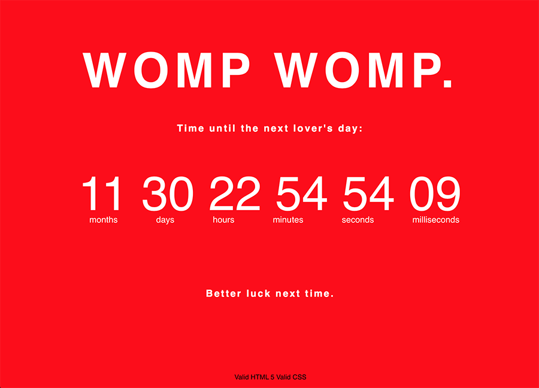
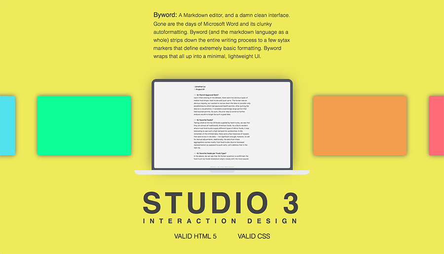

In this studio, I aimed to connect a simple interface with a neat little countdown timer and smooth transitions. Using CSS and JS, I made small interactions between each element work smoothly into the next, which gives the user an easy way to understand the logical flow of the interface. The most effective part of this interface is the centered heart, which captures the user's attention since it is the only thing on the screen initially. Upon clicking the heart, it expands to fill the screen with its color, and reveals the countdown timer. As such, the user is able to perceive the cause and effect transition, and understands how they arrived at the current part of the animation sequence. After doing so, the rest of the page is simply a countdown to the next valentines day.

Designing Studio 3
In the process of making this studio, I wanted to focus mainly on animation and transitional properties of each element in order to create a beautiful interface. Rather than letting all elements on the page be visible initially, I wanted to place some
of the “screens” off of the viewing port so that the user would have more to discover after clicking the first one. Firstly, this inspires a sort of curiosity within the user to continue clicking through the different options. Secondly,
the interface invites the user to explore the different colors. Due to the various transitions that were in place to show off colors and information, each screen has some variance to it that provides room for discovery. Lastly, the interface is clean.
The entirety of this project revolves around the digital tools that I use as a designer and programmer, and most of them have a minimal UI. I wanted to replicate such an aesthetic in this studio.

Form Design on the Web
One of my most often used forms is a checkout form for online shopping. When checking out for the first time at a small online retailer, we can see that most of these forms are powered by a company Shopify.
The design used in the checkout process is streamlined and simple: it asks for the initial shipping and contact information, and displays everything that was in the shopping cart on a sidebar to the right. The steps toward finishing the checkout process
are clearly labeled, and there are no extra optional forms. This allows for the process to be entirely uniform, and gives the user confidence when ordering.
For the most part, these forms are saved for future purchases and only require confirmation upon shopping. The process for saving information is also easy with a checkbox that allows the the company to store your information. Though navigating the
forms is easy, sometimes it’s best to skip straight to checkout
Let’s take a look at Spotify.com. Making use of a variety of album covers as images, Spotify showcases popular titles at any viewport width. Let’s begin with the design as viewed on mobile: each section of the page is accompanied by an image that
accentuates the text, and is distinguished by different background colors or images. Very little padding can be seen on the sides due to the restricted screen size.
As the screen is expanded to a typical vertical iPad viewing width, we can still see the hamburger menu icon for navigation, but there becomes a more defined grid in the body sections and increased padding. Spotify can also take a few more creative
liberties with how images are displayed: instead of being confined to the same column, the images of each section are instead placed to the side of the text and resized to take up more screen space. Additionally, Spotify shows some animations and
fade effects when displaying each section.
Finally, as the screen is resized for desktop, we can see a full range of animations and images. The grid expands slightly, however the most drastic difference is the additional space for images - instead of adding more images, Spotify shows more
of the original image, creating a seamless viewing experience on any medium.